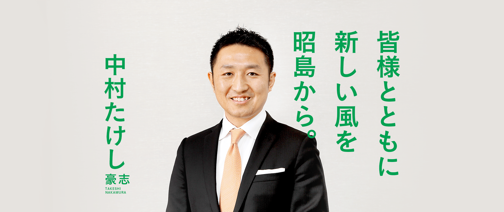
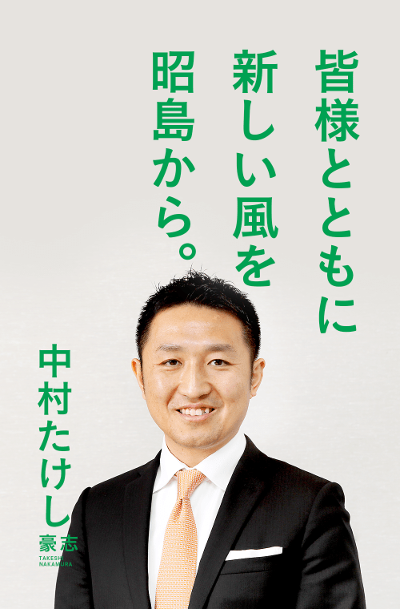
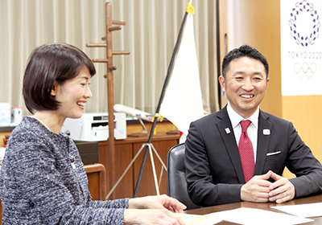
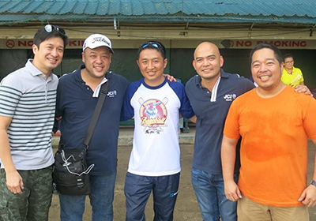
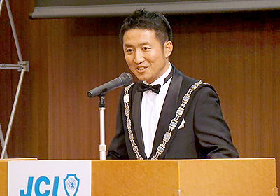

一緒に
変えよう。
昭島から変える、東京を変える
中村たけし
41歳
KAIZEN断行!!
魅力あふれる昭島から。
教育福祉総合センターの整備を促進します
東中神駅自由通路等の整備を促進します
東京オリンピック･パラリンピック大会に向けたスポーツ振興を更に促進します
国･都･市が連携し都市計画道路を整備します
認証保育所利用者の負担軽減をします
地域の子育て支援拠点事業を推進します
第2子以降の保育所利用者の負担を軽減します
まちのにぎわいとものづくり企業を支援します

伝統文化を継承する環境を整備します
保育士が働きやすい環境を整備します
KAIZEN断行!!
変える東京。
1
若者が夢と希望を持てる教育都市・東京
- 知・徳・体の基礎的な力を全ての子供が習得
- 非正規から正規雇用へのキャリアアップを積極的に支援
2
高齢者や障害者にやさしい東京
- 「健康寿命」を80歳まで延伸
- 障害者グループホームや通所施設などを積極的に整備
3
日本の将来を担う子育て世代にやさしい東京
- 結婚・妊娠・出産・育児・教育への切れ目ない支援
- 待機児童ゼロ
- 女性がいききと活躍できる社会
4
世界に開かれた国際都市・東京
- 国際的に活躍する人材の育成
- （国家戦略特区を活用した）企業誘致による経済活性化を推進
5
都民のいのちと健康を守る安心都市・東京
- いつでも誰もが医療を受けられる安心社会へ
- 犯罪をなくす、美しく安全なまちづくり 地域での見守り・防犯活動を支援
6
後世に誇れるクリーンで美しい東京
- 経済成長を支え、環境にやさしいエネルギー政策
- 水と緑に囲まれた潤いを実感できる魅力的な都市へ
7
力強い経済で日本をリードする東京
- 商店街の元気で地域を活性化
- 地産地消を推進
- 新規雇用創出
8
災害に強い安全な東京
- 大地震や津波、豪雨等に打ち勝つ強靭な都市へ
- 木造住宅密集地域の不燃化・無電柱化を推進
9
ヒトとモノの流れがスムーズに行きかう首都圏
- 三環状道路（圏央道、外環道、中央環状）をはじめ道路ネットワークを重点整備
- 鉄道の連続立体交差化等によりスムーズで安全な道路交通へ
10
すべての都民を元気にするスポーツ文化都市・東京
- 誰もがスポーツを楽しみ健康を実感できる都市を実現
- 障害者も身近にスポーツを楽しめる環境を整備


都政を前へ。
昭島の皆様、昭島から都政に挑戦する自民党の中村豪志です。
今日、昭島市は良好な市政運営が成されており、国政においても自公政権が緊張感を持って難題に取り組んでいます。
都政においては神野次郎都議の4年間で、信頼関係が政治の安定を生み、国政・都政・市政の連携が経済の活性化を進めてきました。これまでの神野都議からバトンを受け継ぎ、継続すべきは継続し、新たな課題にも積極的に取り組み、都政を前へ進めます。
プロフィール
昭和51年4月28日生まれ（仙台市生まれ）
静岡県立磐田南高校卒、明治大学政治経済学部卒
米国オレゴン大学政治学部卒
活動
（公社）東京青年会議所 理事長 H27
（公社）日本青年会議所 監事 H28
第31回わんぱく相撲全国大会 大会会長
職歴
ヒューレット･パッカード、モルガン･スタンレー
などで16年間国際ビジネスに従事
家族
妻、一男（5歳）、一女（2歳）


